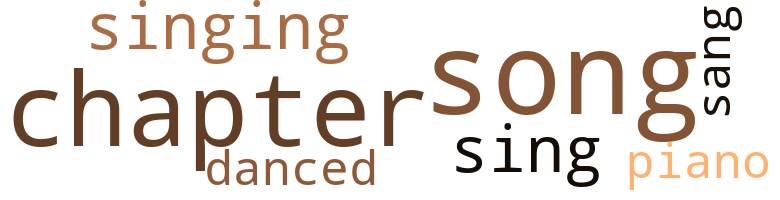
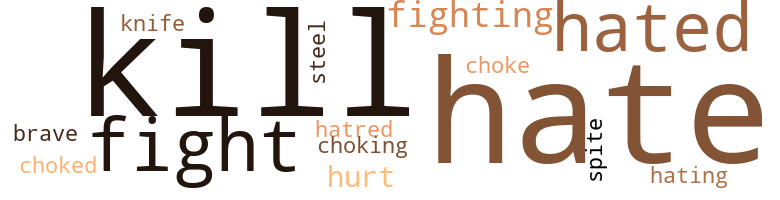
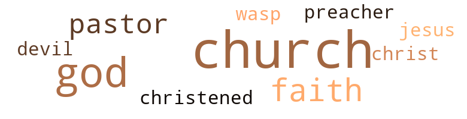

I Was Afraid to Be Happy, by Houston, Ruby R. ()
13 music-related terms matched in this text.
Most frequent terms in this topic: chapter (2); song (2); sing (2); singing (2); piano (1)
chapter.n.01
Definition: a subdivision of a written work; usually numbered and titled
| word | sentence |
|---|---|
| chapter | I was on chapter 12 and he was on chapter 6 . |
| chapter | I was on chapter 12 and he was on chapter 6 . |
| chapters | After I read a while , I would give him the book and he would read and ask questions about what was ahead in the following chapters . |
dance.v.03
Definition: skip, leap, or move up and down or sideways
| word | sentence |
|---|---|
| danced | We danced and served soft drinks , chile , fried chicken , spaghetti and beer . |
piano.n.01
Definition: a keyboard instrument that is played by depressing keys that cause hammers to strike tuned strings and produce sounds
| word | sentence |
|---|---|
| piano | One evening I went over to the piano . |
sing.v.02
Definition: produce tones with the voice
| word | sentence |
|---|---|
| singing | Then one day , about a week before the wedding , I was home alone , singing a song and feeling happy when out of the blue sky like a bolt of lightning , I got news . |
| sang | As I sewed I sang " The Lord Will Make a Way Some How . " |
| sing | I got up before him and made a fire in the stove , then I would hear his feet as he got up and my heart would sing . |
| sing | The sun would rise beautifully and how sweet the birds would sing . |
singing.n.01
Definition: the act of singing vocal music
| word | sentence |
|---|---|
| singing | The lights were so beautiful when the Illinois Central pulled in to the station that my heart was singing with the wheels . |
song.n.01
Definition: a short musical composition with words
| word | sentence |
|---|---|
| song | Then one day , about a week before the wedding , I was home alone , singing a song and feeling happy when out of the blue sky like a bolt of lightning , I got news . |
| song | It was my favorite song : " Somebody Loves Me I Wonder Who . " |
| Song | Mr. Harris came over to my side and said , " That is a pretty Song , Nell , and you are a lovely girl . |
32 violence-related terms matched in this text.
Most frequent terms in this topic: hate (5); kill (5); fight (4); hated (4); fighting (3)
fight.n.05
Definition: a boxing or wrestling match
| word | sentence |
|---|---|
| fight | Dee and I made the dogs fight by clapping our hands together and saying , " Get him . " |
| fight | But all the fight had gone out of him . |
| fight | But I was sick at heart and all the fight had gone out of me . |
fight.v.02
Definition: fight against or resist strongly
| word | sentence |
|---|---|
| fighting | They were real vicious about fighting each other . |
| fighting | Papa always told us not to tease them into fighting . |
| fighting | We never put dogs to fighting again - or even chickens . |
| fight | I tried to fight my way out of the fog . |
gag.v.06
Definition: cause to retch or choke
| word | sentence |
|---|---|
| choke | He jumped upon me and began to choke me . |
| choked | He still choked me , then I bit him on the shoulder . |
| choking | I did n't tell the children about him choking me , for I was afraid that Walter might kill him . |
hate.n.01
Definition: the emotion of intense dislike; a feeling of dislike so strong that it demands action
| word | sentence |
|---|---|
| hatred | But when he went to the barn where Mack was , he just sit there staring at the boss with hatred in his eyes . |
| hate | They all ran in the room and I saw them stare at Bob with hate in their eyes just daring him to make a motion toward me . |
hate.v.01
Definition: dislike intensely; feel antipathy or aversion towards
| word | sentence |
|---|---|
| hate | He lives with his mother , brother and sick father , if it 's all right with you , but I hate to ask you to share so little , " Mack said . |
| hated | I hated to leave my sisters , who were all in Chicago except my half-sister , Grace . |
| hating | I came as close to hating a man as I ever did that summer . |
| hate | I hate to write this part of my story . |
| hate | He talked to me like a child and after he left I just would n't believe it was happening to my Mack , but it did , the one thing we hate but must accept : Death . |
| hated | But later , oh how I hated the fact that I did n't speak . |
| hate | Yes my love turned to hate . |
| hated | So I began to think about where to move , though I hated to leave my stepchildren . |
| hated | Even though I now hated Bob , I loved his children . |
kill.v.10
Definition: cause the death of, without intention
| word | sentence |
|---|---|
| kill | David was dressed to kill , for he wore a full dress suit . |
| kill | I took it from him , asking what he planned to do with if , He said , " I 'm going to kill the if he does n't stop meddling in my business . " |
| kill | " Thou shalt not kill " stared at me . |
| kill | How could I kill the ones so dear to me ? |
| kill | I did n't tell the children about him choking me , for I was afraid that Walter might kill him . |
knife.n.02
Definition: a weapon with a handle and blade with a sharp point
| word | sentence |
|---|---|
| knife | But I knew he did so I went to him , opened his jacket and he had my big butcher knife . |
malice.n.01
Definition: feeling a need to see others suffer
| word | sentence |
|---|---|
| spite | In spite of our poverty , we were happy . |
pain.v.02
Definition: cause emotional anguish or make miserable
| word | sentence |
|---|---|
| hurt | I was afraid to go , but he took me by the arm and said , " Do n't be like that , honey , I am not going to hurt you . " |
| hurt | I opened my mouth to speak but she slammed down the receiver so hard that it hurt my ears . |
sword.n.01
Definition: a cutting or thrusting weapon that has a long metal blade and a hilt with a hand guard
| word | sentence |
|---|---|
| steel | We had saved up a little money while Mack was working a the steel mill . |
weather.v.01
Definition: face and withstand with courage
| word | sentence |
|---|---|
| brave | He even got so brave in October that he started to stay out all night . |
34 religion-related terms matched in this text.
Most frequent terms in this topic: church (13); God (8); pastor (3); faith (3); Christ (1)
baptize.v.01
Definition: administer baptism to
| word | sentence |
|---|---|
| christened | She looked like a doll in her pink silk dress that I bought her to be christened in . |
church.n.02
Definition: a place for public (especially Christian) worship
| word | sentence |
|---|---|
| church | I remember one Sunday Papa went to church and left the little ones at home . |
| church | We were married by Rev. Winters , who had a church on 48th St. After the ceremony , there was plenty to eat and drink . |
| church | Papa was steward in the church and Mama was also very active . |
| church | It was in the month of August , and Papa and some of the other church members were putting a roof on the church . |
| church | So all the wives had to take dinner to the church to feed the working men . |
| church | Mama cooked a big dinner to take to the men at the church . |
| church | She was taken to a neighbor 's house close to the church . |
| church | I loved the church and often fixed dinners for my pastor . |
| church | We went to church each Sunday and to town each Saturday . |
| church | We changed our membership to the church near us . |
| church | One Sunday , I asked my pastor to talk to me after church . |
church.n.04
Definition: the body of people who attend or belong to a particular local church
| word | sentence |
|---|---|
| church | That day at church , Mama was serving dinner when she got sick . |
| church | Even though I see him very often at church , I would n't trust myself too near him . |
curate.n.01
Definition: a person authorized to conduct religious worship
| word | sentence |
|---|---|
| pastor | I loved the church and often fixed dinners for my pastor . |
| pastor | One Sunday , I asked my pastor to talk to me after church . |
| pastor | So at noon the next day I prayed and I knew my pastor was praying , for I could feel it somehow . |
god.n.03
Definition: a man of such superior qualities that he seems like a deity to other people
| word | sentence |
|---|---|
| God | I sat down beside his bed and he took my hand and held it as if to say , " Ruth , every thing is all right with me and God . " |
| God | I know that in God 's own time he will set me free and I shall be free indeed . |
| God | He did his best , God bless his soul , But my sisters had Mama 's place to hold . |
| God | So , hats off to sisters dear God will bless you , have no fear . |
| God | I think I would have lost my mind if I had n't talked to God . |
| God | As the months passed , fear tried to take hold of me , but I prayed to God for strength and it came . |
| God | He said , " Ruth , I ca n't answer that , but if you pray with me each day at noon , God will give you the answer . " |
| God | And God has been good to us especially since we got to the city . |
jesus.n.01
Definition: a teacher and prophet born in Bethlehem and active in Nazareth; his life and sermons form the basis for Christianity (circa 4 BC - AD 29)
| word | sentence |
|---|---|
| Jesus | I went to bed and in my heart I knew as long as Jesus Christ was the shade on my right hand I would n't try , or even think of such sin ever again . |
messiah.n.01
Definition: any expected deliverer
| word | sentence |
|---|---|
| Christ | I went to bed and in my heart I knew as long as Jesus Christ was the shade on my right hand I would n't try , or even think of such sin ever again . |
preacher.n.01
Definition: someone whose occupation is preaching the gospel
| word | sentence |
|---|---|
| preacher | " Darling , I am so sorry , but you see I did n't clear but $ 12 and after I buy the license and pay the preacher , that will only leave a little . " |
religion.n.01
Definition: a strong belief in a supernatural power or powers that control human destiny
| word | sentence |
|---|---|
| faith | I tried to have faith in him . |
| faith | We were both glad , but sometimes fear of losing her would haunt us and we Would pray for faith . |
| Faith | We were reading a book entitled " Faith against Life 's Storms . " |
| faith | I had that much faith in him . |
satan.n.01
Definition: (Judeo-Christian and Islamic religions) chief spirit of evil and adversary of God; tempter of mankind; master of Hell
| word | sentence |
|---|---|
| Devil | The Devil lost another soul because as I read , my plan slowly began to fade away . |
wasp.n.01
Definition: a white person of Anglo-Saxon ancestry who belongs to a Protestant denomination
| word | sentence |
|---|---|
| wasp | By the time they got through tearing down wasp nests and spider webs , it was very late . |